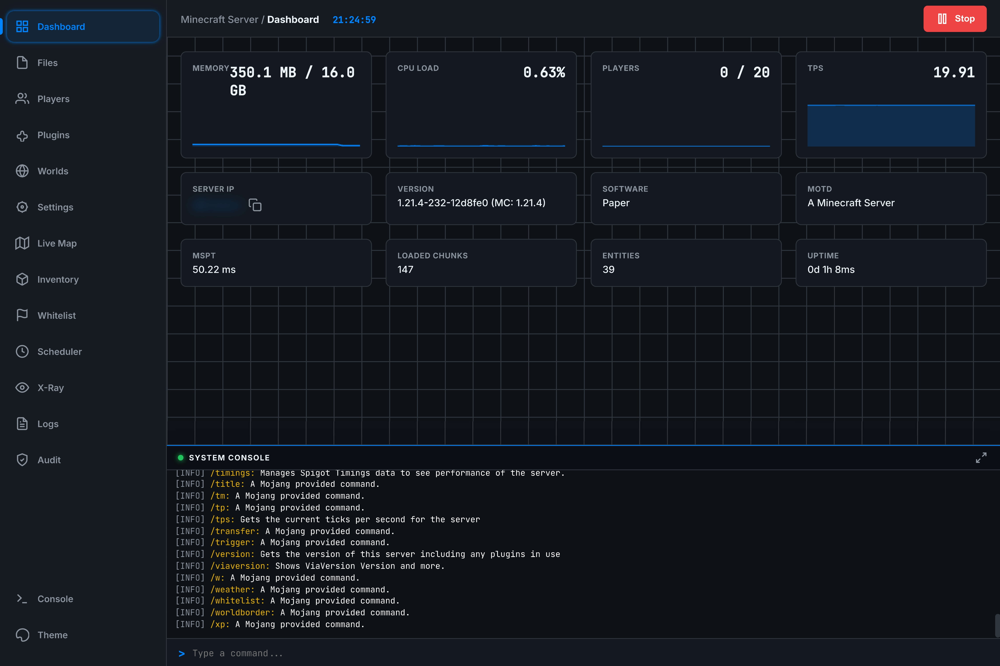
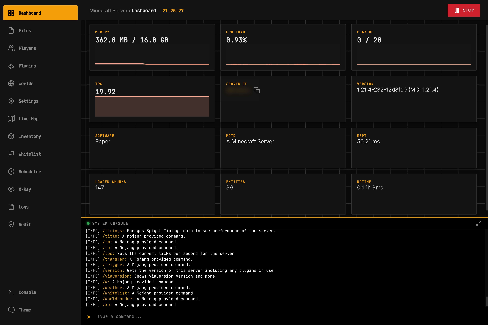
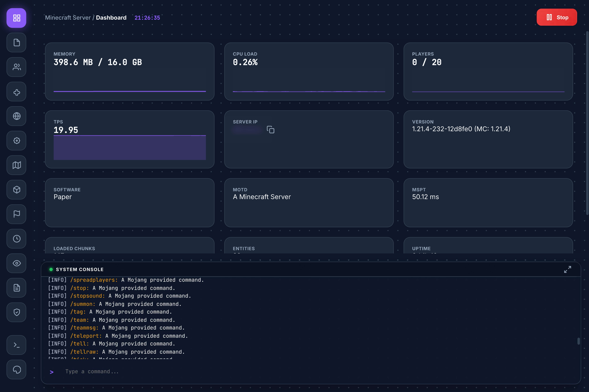
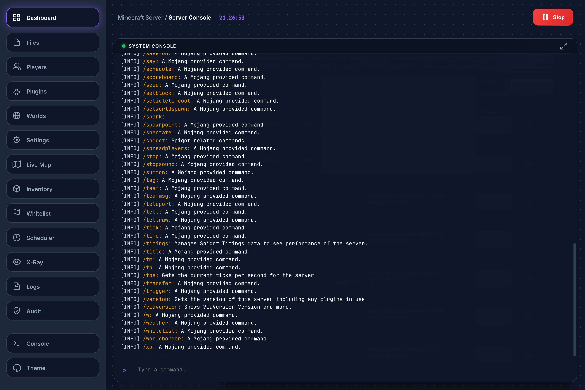
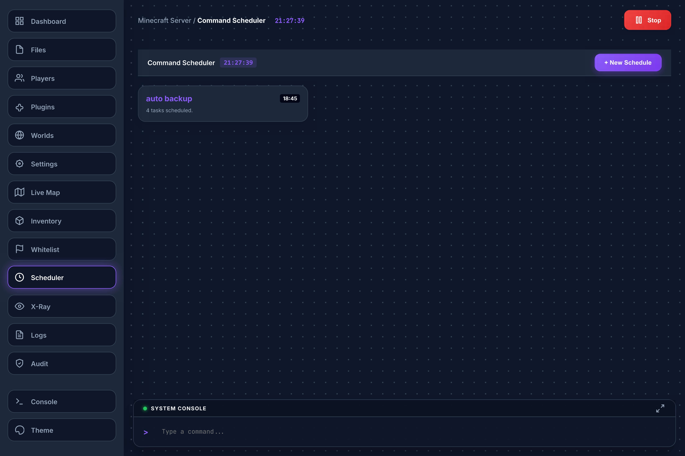
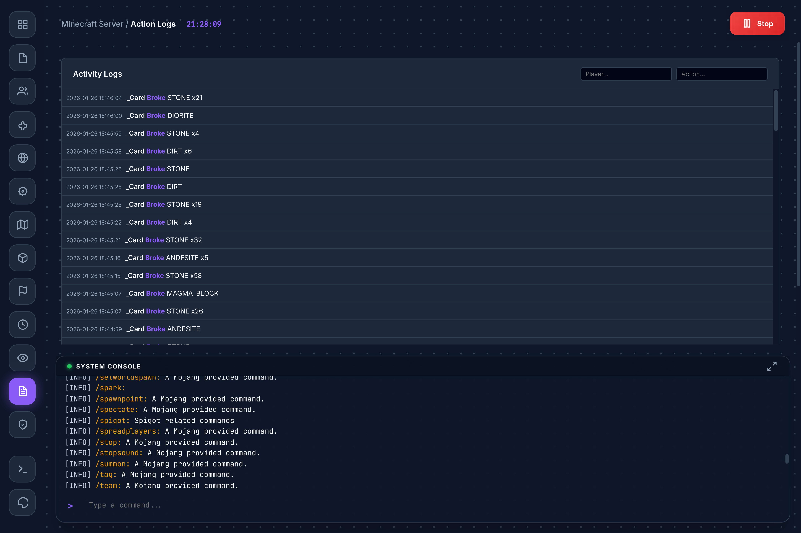
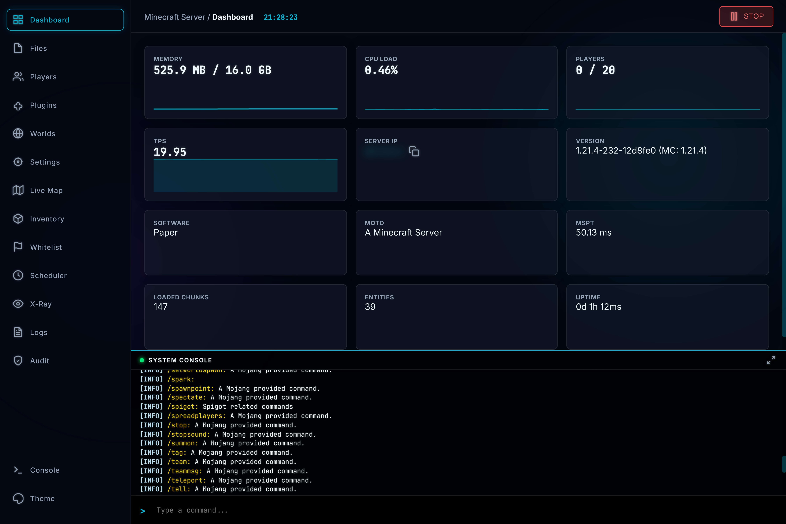
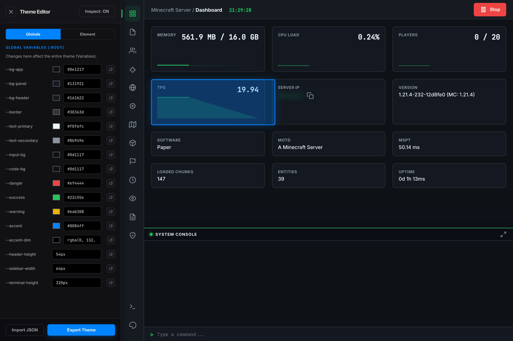
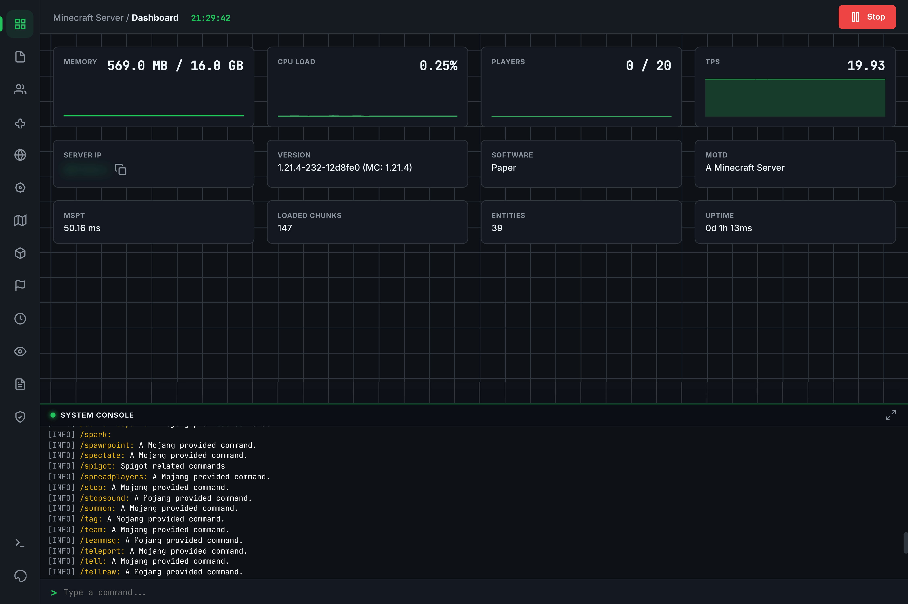

Advanced Server Management
Web-UI for Minecraft
Only use in secure LAN environments or private servers with trusted friends.
Compatible with versions 1.21.4+. Full control over your server with Dashboard, File Manager, Live Map, and more. Experience the power of Obsisphere.
Key Features
Everything you need to manage your server effectively.
- Real-time Graphs (Memory, CPU, TPS)
- Live Performance Stats (MSPT, Chunks)
- Server Control (Stop/Start)
- Copyable Server IP & MOTD
- Full Browser (Create, Upload, Edit, Delete)
- In-browser Code Editor
- Bulk Actions (Zip/Unzip, Move, Copy)
- Media Preview (Images/Video)
- Kick, Ban, Tempban
- Whitelist Management
- Inventory Inspection (Offline/Online)
- Equipment Slots & Ender Chest
- Real-time Top-down Map
- Player Tracking
- Backup & Restore System
- World Settings (Time, Weather)
- Live Console Stream (ANSI Colors)
- Command Input
- Detailed Activity & Audit Logs
- X-Ray Watch (Anti-Cheat Analysis)
- Plugin Manager (Enable/Disable/Delete)
- Spigot Resource Browser
- Advanced Theme Editor (CSS Variables)
- Presets (Stellar, Ferrum, etc.)
Common Questions
Yes! Since Obsisphere connects via the standard plugin API, it works seamlessly alongside Geyser and Floodgate.
Obsisphere runs on its own port (default 8080). You only need to forward that single port to access the panel from outside your network.
Currently, Obsisphere is designed for Spigot/Paper/Bukkit derivatives. Forge and Fabric support is planned for a future release.
Interface Gallery
See Obsisphere in action.
*Video preview covers all features.
Screenshots









Changelog
History of development.
The Resources Update
This update brings the power of SpigotMC directly into the panel.
- Resource Browser: Added ability to search, view details, and download plugins from Spigot directly within the web UI.
- Polish: General UI improvements and bug fixes.
The Visuals Overhaul
Major upgrades to the File Manager and Map renderer.
- Advanced File Manager: Added Zip/Unzip, Create File/Folder, Upload File/Folder functionality.
- Map 2.0: Rewrote map renderer. Now 2D with ambience/height occlusion, correct textures, and player listing.
- Multi-world: Added support for rendering and selecting different worlds in the live map.
The Plugin Migration
Transitioned project to a standalone Bukkit/Spigot plugin.
- Architecture: Re-packaged as a standalone .jar plugin.
- Basic Tools: Added simple File Manager (Read/Edit only), User List, and Plugin Disabling.
- World Manager: Added basic backup functionality.
- Primitive Map: Added experimental map (Single pixel chunks, color approximations).
Genesis
- Core: Initial Web UI release.
- Security: Implemented session-token based authentication system.
- Monitoring: Basic Dashboard and WebSocket Console with ANSI color support.
Future Plans
Development Phase 2 is outlined below. We are committed to expanding Obsisphere with advanced networking and integration features.
Protocol Unification (HTTP/SSH/SFTP)
Allowing all protocols to work from a single port by checking initial request bytes.
Advanced API & Permissions
Custom control panel API for external integration and granular permission system for admin/user roles.
Plugin Integrations
Deep support for WorldGuard (Region mapping), LuckPerms (Web Editor), and more.
Legacy Support
Backwards compatibility for Minecraft versions down to 1.16.5.
Optimization
Improving Live Map performance and reducing Audit Log storage footprint.
Download Obsisphere
Current Version: v0.04 (Beta)
⚠️ Early Beta Build - Works, but expect bugs.
Supported Platforms (1.21.4+):
Paper, Spigot, Bukkit, Pufferfish, Purpur, and any other server software that supports the Bukkit plugin API.
Installation Guide
- Stop your Minecraft server.
- Drop the
Obsisphere-0.04.jarinto your server's/pluginsfolder. - Start the server. No extra configuration is required.
- Check the server console for the generated access URL and login token.